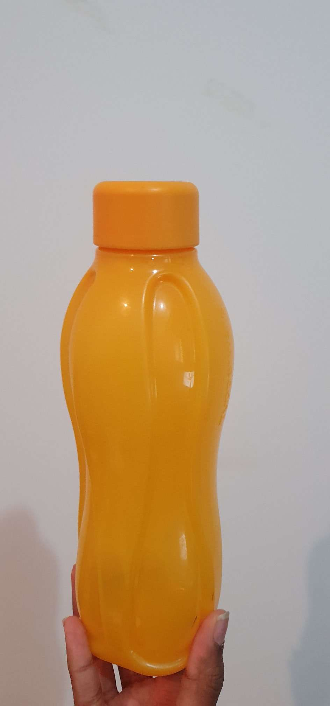

Test-image:
Output on GOOGLE LENS- cutlery
Output on Mobilenet Model- spatula,ladle
Result- Mobilenet is more accurate
Test-image:.JPEG)
Output on GOOGLE LENS- scissor
Output on Mobilenet Model- hook, claw
Result- Google lens is more accurate
Test-image:
Output on GOOGLE LENS- apple watch
Output on Mobilenet Model- digital clock
Result- Googe lens is more accurate
Test-image:
Output on GOOGLE LENS- tupperware water bottle
Output on Mobilenet Model- water bottle
Result- Google lens is more accurate